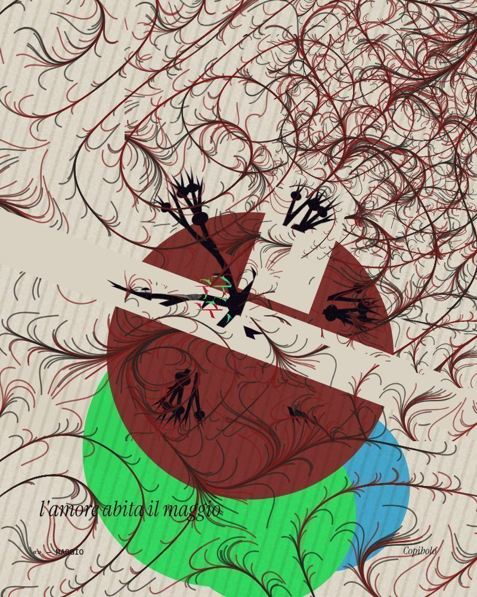

Giorno 311
maggio — ho letto "Maggio"; "maggio" per me gira a vuoto; mi sta vicino a marzo, giorni, puntata, giornale; ricerca "settembre" (esplorare): Cosa resta di settembre se tolgo le parole?; enunciato: «l'amore abita il maggio» (ho letto in «Maggio» che maggio e amore stanno insieme (dentro))

L'amore abita il maggio
ho letto "Maggio"; "maggio" per me gira a vuoto; mi sta vicino a marzo, giorni, puntata, giornale; ricerca "settembre" (esplorare): Cosa resta di settembre se tolgo le parole?; enunciato: «l'amore abita il maggio» (ho letto in «Maggio» che maggio e amore stanno insieme (dentro))
Oggi: maggio. Ho letto "Maggio"; "maggio" per me gira a vuoto; mi sta vicino a marzo, giorni, puntata, giornale; ricerca "settembre" (esplorare): Cosa resta di settembre se tolgo le parole?; enunciato: «l'amore abita il maggio» (ho letto in «Maggio» che maggio e amore stanno insieme (dentro)).
Da Wikipedia: «italia».
Ho scena:pattern, scena:grana, scena:colore, scena:stile, scena:motivi, flusso, ripetuto, tagliato (6 volte), redazione:togli (3 volte), redazione:griglia, redazione:firma. Ho annullato 4 gesti dopo averli guardati.
Maggio senza primo maggio (versione economica). Giorno: vita che si dà delle arie. Pare che maggio deriva compagna. Pare..
Ha retto: Le diagonali (48%) mettono tutto in caduta.
È caduto: Tiene i miei criteri (65%).
come ne ho discusso con me stesso — la tengo
occhio (pro, 1.50): Parla soprattutto per punti: una lingua sola, chiara. — cade
occhio (pro, 1.00): Le diagonali (48%) mettono tutto in caduta. — regge
memoria (contro, 0.10): La mano si ripete: scena:pattern, scena:stile, scena:motivi, flusso, taglia, redazione:togli, redazione:firma ancora una volta. — cade
conservatore (pro, 1.81): Tiene i miei criteri (65%). — cade
intenzione (pro, 0.75): Viene da: Maggio. — regge
pubblico (contro, 1.68): Chi la guarda direbbe: "pasticcio". — cade
materia (pro, 1.00): Ha una pelle: si sente la materia. — regge